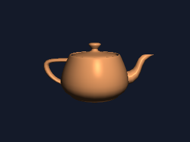

复习 04 · 用 CPU 走一遍渲染管线
目标：不调用任何 gl-*，用 Racket 把 14 课的茶壶画出来。你会看到 gl-draw-elements 背后到底有哪几步、每步执行多少次，以及为什么其中三步要交给 GPU。
第一条命令输出 320×240 的图，第二条换成分辨率更高的 800×600。两次都会在终端打印顶点数、三角形数、片元数和分阶段耗时。

先记住GPU 没有发明另一套图形算法。它做的是同一套公式，只是把「顶点变换」「片元着色」放到大量并行单元上，并把中间的光栅化和深度测试做进了硬件。这个脚本把那三步从硬件里拿出来，写成你能读的 Racket 代码。
读法本页 Racket 代码里的 vec-3 / vec-4 / vx / vdot 来自 #lang glsl（racket-shader），不是 racket/math；racket/math 只提供 degrees->radians。生成 GLSL 时它们才写成 vec3 / vec4。所以下面会同时出现两种拼写：GLSL 原文用 vec4，Racket 代码用 vec-4，指的是同一个四维向量。
R4.1 五步，一步都不少
一次 gl-draw-elements 在 GPU 上会依次经过下面五步。你在 OpenGL 里只写第 1 步和第 5 步；中间三步是固定管线，看不见，但确实在跑。
| 步骤 | CPU 版函数 | GPU 里是谁 | 执行次数（320×240） |
|---|---|---|---|
| 1. 顶点变换 | vertex-shader |
顶点着色器（你写的） | 1202 次，每顶点一次 |
| 2. 图元装配 | rasterize-triangle! 的循环 |
固定管线 | 2256 个三角形 |
| 3. 光栅化 | rasterize-triangle! 里的包围盒 + 边函数 |
光栅化单元 | 按三角形覆盖的像素数 |
| 4. 深度测试 | depth-buffer 比较 |
深度测试单元 | 10355 个候选片元 |
| 5. 片元着色 | fragment-shader |
片元着色器（你写的） | 9982 次，每个通过测试的片元一次 |
GPU 把 1 和 5 暴露给你，因为这两步「每个顶点 / 每个像素要算什么」因场景而异；2–4 对所有三角形都一样，所以做成固定硬件。CPU 版没有这个分工，五步都得自己写。
R4.2 顶点变换：1202 次
14 课的 model-vert 里，三行就干完了（这一段是 GLSL 原文，所以写 vec4）：
v-normal = u-normal-matrix * normal;
v-frag-pos = (u-model * vec4(pos, 1.0)).xyz;
gl_Position = u-proj * u-view * u-model * vec4(pos, 1.0);CPU 版逐字对应（这一段是 Racket，所以写 vec-4）：
(define (vertex-shader v)
(define p (vec-4 (vx (obj-vertex-pos v))
(vy (obj-vertex-pos v))
(vz (obj-vertex-pos v))
1.0))
(define world4 (mat4-mul-vec model p))
(define clip (mat4-mul-vec mvp p))
(define w (vw clip))
(v-out clip
(vec-3 (/ (vx clip) w) (/ (vy clip) w) (/ (vz clip) w))
(vec-3 (vx world4) (vy world4) (vz world4))
(mat3-mul-vec normal-matrix (obj-vertex-normal v))))唯一的差别是：CPU 版先把 proj · view · model 乘成一个 mvp，每个顶点只乘一次；GPU 版把三个矩阵作为 uniform 传进去，每个顶点乘三次。数学一样，区别是「矩阵乘法做几次、在哪做」——数据流决策，不是算法决策。
1202 个顶点串行跑完只要约 0.005 秒。顶点变换本身并不贵，贵的是后面的片元。
R4.3 光栅化：GPU 替你做的第一件大事
顶点变换之后，你只有三个屏幕坐标。要回答「哪些像素属于这个三角形」，CPU 版用边函数 + 重心坐标：
(define area (edge x0 y0 x1 y1 x2 y2))
(for* ([y (in-range min-y (add1 max-y))]
[x (in-range min-x (add1 max-x))])
(define px (+ x 0.5))
(define py (+ y 0.5))
;; 重心坐标 = 三个边函数 / 总面积；三个都 ≥ 0 就在三角形内
(define b0 (/ (edge x1 y1 x2 y2 px py) area))
(define b1 (/ (edge x2 y2 x0 y0 px py) area))
(define b2 (/ (edge x0 y0 x1 y1 px py) area))
(when (and (>= b0 0.0) (>= b1 0.0) (>= b2 0.0))
;; 深度：z_ndc 在屏幕空间是线性的，直接插值
(define z (+ (* b0 z0) (* b1 z1) (* b2 z2)))
(when (< z (vector-ref depth-buffer dx))
(vector-set! depth-buffer dx z)
...)))这段代码里藏着两个平时完全看不见、但 GPU 一直在做的事。
第一，透视校正插值。屏幕上的重心坐标不能直接用来插值世界坐标和法线，因为远处的顶点在屏幕上被压缩了。正确做法是先插值 attr/w 和 1/w，再除掉 1/w：
(define inv-w (+ (* b0 inv-w0) (* b1 inv-w1) (* b2 inv-w2)))
(define (f x0 x1 x2)
(/ (+ (* b0 inv-w0 x0) (* b1 inv-w1 x1) (* b2 inv-w2 x2)) inv-w))GPU 对每个 varying 自动做这件事，所以你写 v-frag-pos、v-normal 时不需要关心 w。
第二，深度测试。同一个像素可能被多个三角形覆盖（overdraw）。depth-buffer 记下当前最近的值，只有更近的片元才能写颜色。GPU 上对应 gl-enable gl-depth-test 和 gl-depth-func，你只设状态，不写循环。
为什么 2–4 步不交给你写这三个步骤的规则对所有三角形、所有场景都一样，做成固定硬件更快也更省心。你能调的只有状态：gl-cull-face（背面剔除）、gl-depth-func（深度比较方式）、gl-viewport（映射到哪块像素）。
R4.4 片元着色器：同一行 Phong
通过深度测试的片元，交给和 14 课一模一样的公式：
(define (fragment-shader frag-pos normal)
(define norm (vnormalize normal))
(define light-dir (vnormalize (vsub light-pos frag-pos)))
(define view-dir (vnormalize (vsub view-pos frag-pos)))
(define reflect-dir (vreflect (vneg light-dir) norm))
(define ambient 0.15)
(define diff (max (vdot norm light-dir) 0.0))
(define spec (* (expt (max (vdot view-dir reflect-dir) 0.0) 32.0) 0.4))
(define lit (* (+ ambient diff spec) 1.0))
(vmul (vmul light-color lit) object-color))把这段和 09、14 课的 GLSL 并排看，除了语法，没有任何区别。光照不是「GPU 的能力」，它就是一个逐像素的函数；GPU 只是能同时跑很多份。
R4.5 数字：CPU 到底算了多少
本机一次实测（Racket，单线程）：
| 320×240 | 800×600 | 变化 | |
|---|---|---|---|
| 顶点变换 | 1202 次 | 1202 次 | 不变 |
| 三角形（剔除后） | 1042 | 1042 | 不变 |
| 覆盖像素 | 9,982 | 62,798 | ×6.3 |
| 候选片元（含 overdraw） | 10,355 | 65,147 | ×6.3 |
| 光栅化 + 着色 | 约 0.08 s | 约 0.47 s | ×5.9 |
| 解析 OBJ | 约 0.06 s | 约 0.06 s | 不变 |
| 合计 | 约 0.2 s | 约 0.7 s | ×3.8 |
像素数涨了 6.25 倍，光栅化阶段也涨了约 6 倍；顶点变换和三角形数完全不动。这就是渲染的成本结构：顶点是「一次」的成本，片元是「每像素」的成本。分辨率越高，片元越占主导。
GPU 的优势正好落在这条曲线上：1202 次顶点变换串行还好；6 万多个片元、每个都跑一遍 Phong，串行要 0.47 秒，而 GPU 可以同时跑几千个。分辨率越高、灯越多，差距越大。
别推成「GPU 一定快」这个场景 CPU 版 0.7 秒也能接受。小场景、一次性计算、需要把结果读回 CPU 的场合，CPU 反而更简单。GPU 赢在「片元数量大，而且每帧都要重算」。
R4.6 GPU 版本少写了什么
| CPU 版要自己写 | GPU 版交给谁 |
|---|---|
| 遍历 2256 个三角形 | 一次 gl-draw-elements，图元装配由管线完成 |
| 包围盒、边函数、重心坐标 | 光栅化单元 |
depth-buffer 的比较和写回 | 深度测试单元（gl-enable gl-depth-test） |
| 逐个像素调用片元函数 | 并行调度，像素之间互不依赖 |
| 把颜色写进数组再存盘 | 直接写 framebuffer，再 swap-gl-buffers |
14 课的 draw 里真正启动计算的只有最后一行：
(gl-draw-elements gl-triangles model-index-count gl-unsigned-short 0)这一行之前的所有 gl-* 都是「传数据」和「设状态」；这一行之后，上面五步在 GPU 上跑完。R1 把 API 分成三类，这里看到的是同一个结论的具体版本。
R4.7 这个渲染器没做什么
为了把注意力留在管线上，CPU 版省略了不少东西：
- 近平面裁剪：只跳过
w ≤ 0的三角形；GPU 会真的把跨过近平面的三角形切开。 - 纹理：没有 UV、没有采样、没有 mipmap；04 和 10 课的内容都在片元之后。
- 抗锯齿：每个像素只取中心点，边缘是硬的；GPU 可以用 MSAA。
- 多光源、阴影、混合、gamma：都还没加。
- 性能：单线程、逐像素函数调用，比 GPU 慢几个数量级。
缺的每一项，在 GPU 上通常只是多一行状态或一个 gl-enable；在 CPU 上却要自己补一段实现。这就是为什么「管线机制」不适合从 CPU 讲起——CPU 版适合解释公式和成本，不适合替代 OpenGL。
一句话CPU 版和 GPU 版算的是同一套公式。差别只有两个：并行度（1202 次顶点、6 万次片元，是串行还是同时跑）和固定管线（光栅化、深度测试由谁实现）。把这两点看清，gl-* 就只剩「传数据、设状态、启动计算」三类。
想对照 GPU 侧的完整代码，去 14 模型加载；想先补矩阵链路，回 R2 矩阵与计算位置；想补光照公式，回 R3 光照。